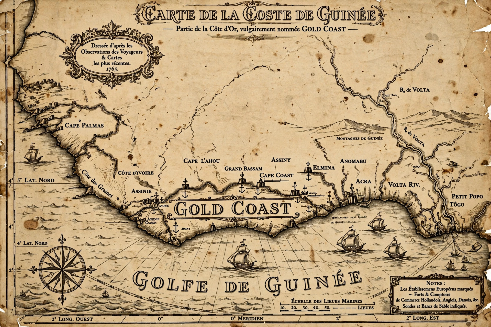

From Wikipedia, the free encyclopedia
| Gold Coast | |
|---|---|
 | |
| Region | Coast of the Gulf of Guinea, West Africa (modern Ghana) |
| Named for | Gold trade |
| Colonial power | Britain (1821–1957) |
The Gold Coast is the name formerly given by Europeans to a coastal region of West Africa along the Gulf of Guinea, corresponding roughly to modern-day Ghana. The name — shared by neighbouring stretches called the Slave Coast, Ivory Coast and Grain Coast — reflected the region's role in the trade in gold, which had drawn merchants to the area since the 15th century. From 1821 until independence in 1957 it was a British colony under the name Gold Coast; Ghana was the first sub-Saharan African colony to achieve independence, led by Kwame Nkrumah.
The Portuguese were the first Europeans to reach the coast, arriving in 1471; they built the fortress of São Jorge da Mina (Elmina Castle) in 1482 to protect the gold trade with the inland Akan kingdoms. The Dutch, Swedes, Danes, Brandenburgers and British followed, establishing a chain of forts and trading lodges along the coast. The Akan traded gold dust, ivory and kola nuts for European cloth, metalware and firearms; from the 17th century the same forts became depots for the transatlantic slave trade, above all at Cape Coast and Elmina.
Britain consolidated its holdings after abolishing the slave trade, gradually extending authority inland through a series of wars with the Ashanti Empire (1824–1901). The Gold Coast Colony was formally proclaimed in 1874. The colony became wealthy on cocoa — introduced in the late 19th century — and gold mining, and by the mid-20th century it was one of Britain's most prosperous African possessions, with an educated elite and an active press.
The United Gold Coast Convention and then Nkrumah's Convention People's Party mobilised mass politics after the Second World War. Riots in Accra in 1948 accelerated constitutional reform; Nkrumah became prime minister in 1952 after his party won successive elections. On 6 March 1957 the Gold Coast became the independent nation of Ghana, taking its name from the medieval Ghana Empire to the northwest.